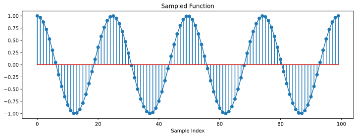
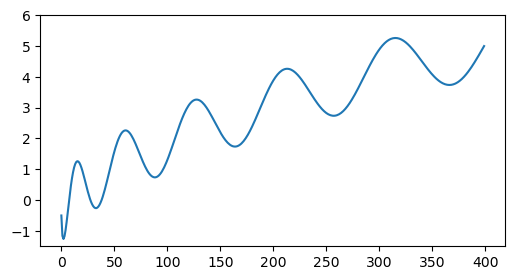
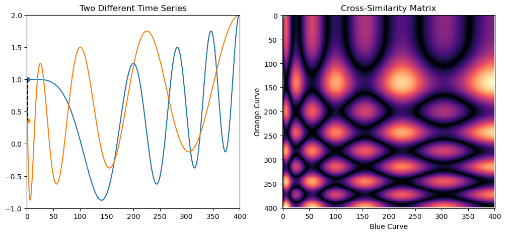
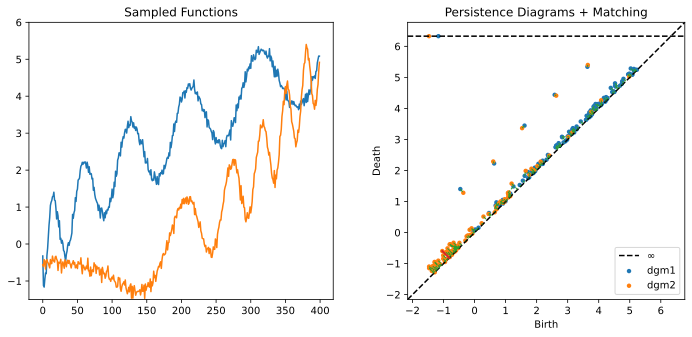
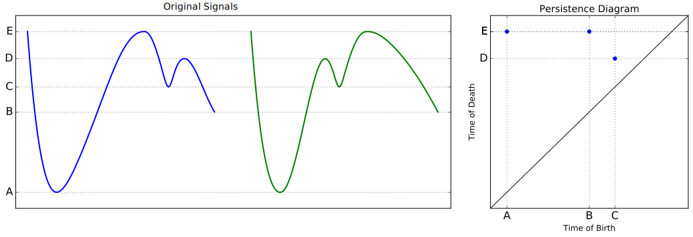
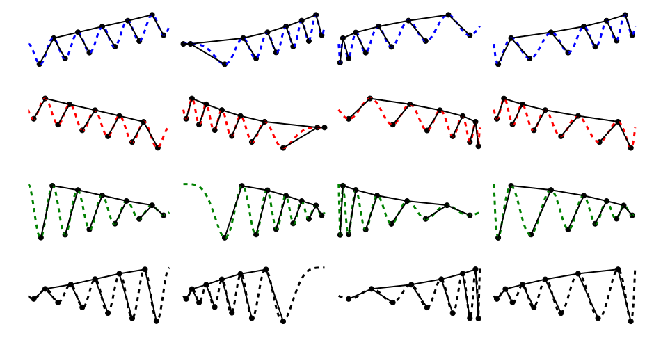
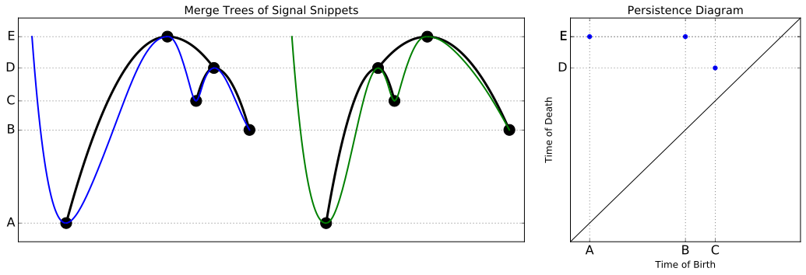

We start with a fairly innocuous question: How do we train a computer to recognize that a group of real-valued, sampled functions is the same, up to a parameterization? By sampled, we mean that we've evaluated the function at a sequence of numbers in its domain. This is sometimes referred to as a one dimensional time series. For instance, below are 100 samples of the function cos(2 π t) over the interval [0, 4]
By parameterization, we mean that the function can be pre-composed with a monotonically increasing function h(x) as f(h(x)). For instance, the animation below shows 400 samples of different parameterizations of the function
on the interval [0, 1], composed with different monotonic functions h(x)
Now stare at this picture of a bunch of time series for a moment, and see if you can sort them into different groups, or "clusters," of equivalence classes of time series with a reparameterization as the equivalence relation
There are actually 4 distinct clusters, as shown below
But how can we train a computer to discover that when all we're given is groups of 400 numbers?
One popular numerical approach to compare functions is known as dynamic time warping[1]. It explicitly solves for a discrete version of the optimal parameterization to best align two functions known as a "warping path" or "time-ordered correspondence." One can associate a total cost to this parameterization to measure dissimilarity.
The animation below shows an example of applying dynamic time warping to two time series which are the same up to a parameterization. As you can see, the parameterization matches parts of the functions that are doing the same thing, even when they occur at different times.
The problem with this approach, however, is that the cost associated with an optimal parameterization fails to be a metric, as it can violate the triangle inequality. In this project, we want to devise something that is a metric.
[1] Hiroaki Sakoe and Seibi Chiba. Dynamic programming algorithm optimization for spoken word recognition. IEEE transactions on acoustics, speech, and signal processing, 26(1):43–49, 1978
Another tool we can use which is blind to parameterization comes from the field of topological data analysis and is known as a lower star filtration, which is an instance of what's known of as "watershed methods." We flow water from the bottom of the graph to the top and keep track of the pools that are created. The moment a pool is created is referred to as a birth event, and the moment it merges with another pool is known as a death event. Birth events happen when the water reaches a local min, and death events happen when water reaches a local max. We can record these events in what's known as a persistence diagram, where each point in this diagram corresponds to a pool of water that was on its own for some amount of time, and its death-birth is referred to as its persistence. The animation below shows the persistence diagram for re-parameterized time series.

The diagram stays numerically constant over all of the different warps, so it is automatically blind to Adding noise does not significantly change the points of high persistence, though it does add many points with low persistence towards the "diagonal" where birth = death.
However, we can devise a metric between persistence diagrams which is stable, in the sense that slight noise does not cause the metric to blow up. This metric is known as the bottleneck distance, and it is the result of constructing a perfect matching between a pair of persistence diagrams and reporting the maximum length edge in this matching. For instance, here is a perfect matching between the diagrams of two of the time series in the above animation
Notice how the maximum length edge is quite small, reflecting that these time series are close to each other even with noise and different parameterizations.
It seems like this is a great approach, so what's the downside? Unfortunately, it's blind to a class of transformations much larger than just re-parameterizations. It also can't tell a time series from its reflection. It also gets mixed up with less obvious examples, such as the two below, which have identical persistence diagrams even though they're not simple reflections or re-parameterizations of each other
We can devise a structure over our lower star filtrations that's stronger than a persistence diagram and which keeps track of a hierarchy of pairings that happens as connected components merge together. This structure is known as a merge tree, and it can be defined over topological spaces more general than 1D time series. The animation below shows a merge tree construction for the union of balls of increasing radius around a collection of points in 2D

In the case of matching two time series up to a parameterization, though, the merge tree is defined over an interval with a left-right ordering, which induces a left-right ordering on the branches. This is referred to as a chiral merge tree[2], and it's the object we will study in this REU. In these trees, all leaf nodes correspond to local mins, and all internal nodes correspond to local maxes. Below are what all of the chiral merge trees look like on the original examples.
As you can see, the heights of the nodes and topology of the trees is equivalent within each class of time series. These trees are more powerful than persistence diagrams. Unlike persistence diagrams, they can tell apart time series which have been reflected. They can also tell apart more subtle distances that persistence diagrams are blind to. The example we showed before with identical persistence diagrams are now distinct in their merge tree representations:
The problem with this representation, however, is that it's very difficult to compare two merge trees, as we will articulate in the next section.
[2] Curry, Justin. "The fiber of the persistence map for functions on the interval." Journal of Applied and Computational Topology 2.3 (2018): 301-321.
This REU will be focused on devising a new metric between chiral merge trees, which, as we've outline above, can apply to matching time series. We would like the metric to satisfy the following 4 properties
Surprisingly, a metric and an algorithm to compute it that satisfy all four of the above properties has eluded researchers so far. The table below shows a few examples of approaches and properties they satisfy
Metric | Stable | Informative | Computable |
|
| Dynamic Time Warping | ❌ |
✔️ |
✔️ |
✔️ |
| Persistence Diagrmas + Bottleneck Distance | ✔️ |
✔️ |
❌ |
✔️ |
| Interleaving Distance between (General) Merge Trees[3,4] | ✔️ |
✔️ |
✔️ |
❌ |
| Integer Linear Programming Metric between (General) Merge Trees[5] | ✔️ |
✔️ |
✔️ |
❌ |
| Merge Tree Edit Distance[6] | ✔️ |
❌ |
✔️ |
✔️ |
| ??? (REU Goal for Chiral Merge Trees) | ✔️ |
✔️ |
✔️ |
✔️ |
In this REU, our goal will be to devise a metric on chiral merge trees that satisfies all properties, and then to implement this algorithm in Python and test it on real time series data.
[3] Morozov, Dmitriy, Kenes Beketayev, and Gunther Weber. "Interleaving distance between merge trees." Discrete and Computational Geometry 49.22-45 (2013): 52.
[4] Agarwal, Pankaj K., et al. "Computing the Gromov-Hausdorff distance for metric trees." ACM Transactions on Algorithms (TALG) 14.2 (2018): 1-20.
[5] Pegoraro, Matteo. "A Metric for Tree-Like Topological Summaries." arXiv preprint arXiv:2108.13108 (2021).
[6] Sridharamurthy, Raghavendra, et al. "Edit distance between merge trees." IEEE transactions on visualization and computer graphics 26.3 (2018): 1518-1531.
Though this project is more on the math side, it will bring in a mix of math and CS skills, particularly via the focus on computability and implementations. An ideal student for this project would have the following preparation: